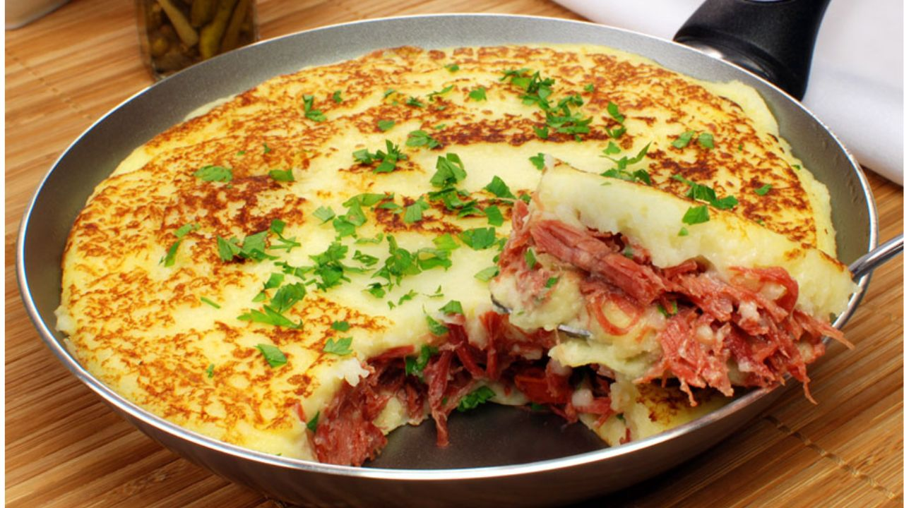

Escondidinho de Carne Seca
Purê aveludado de mandioca com recheio suculento de carne seca refogada e cobertura gratinada.
Preparo50 min
Rendimento6 porções
DificuldadeMédia

Ingredientes
Modo de preparo
- Em uma panela, aqueça 1 colher de manteiga e misture a mandioca amassada com o creme de leite até formar um purê liso.
- Em outra panela, refogue a cebola e o alho na manteiga restante, acrescente a carne seca desfiada e deixe dourar.
- Em um refratário, coloque metade do purê, distribua toda a carne seca e cubra com o restante do purê.
- Polvilhe o queijo por cima e leve ao forno a 200°C por 20 minutos para gratinar.
Dica: Finalize com coentro ou cebolinha picada assim que sair do forno.